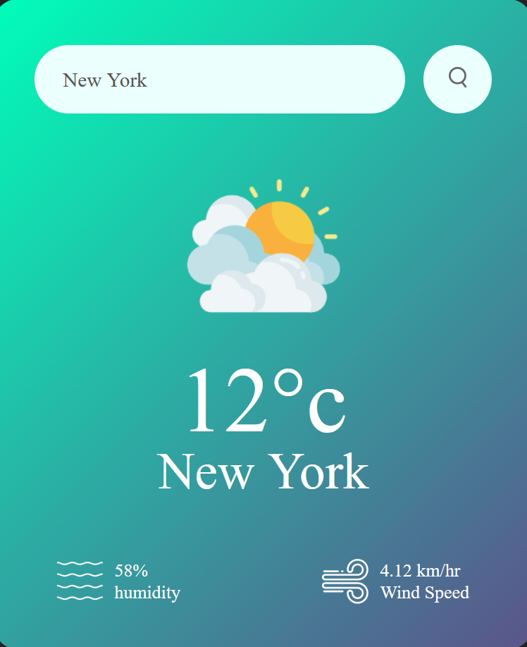

developed a weather app using HTML, CSS, and JavaScript to provide real-time weather information.
The app displays current weather conditions, including temperature, humidity, wind speed, and a weather icon.
It also offers a 5-day forecast with similar details.
Users can input their city name to get tailored weather updates.
The app's clean and intuitive interface enhances user experience.